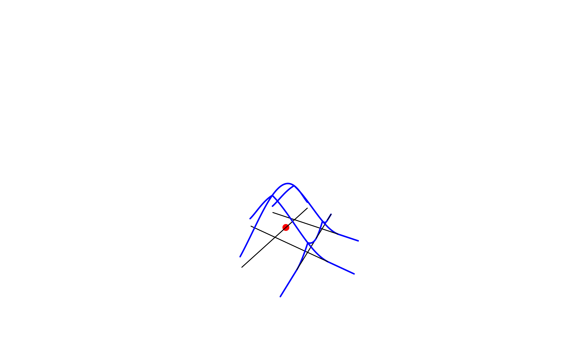

Introduction
The goal of this vignette is to present the differences between the three Network Kernel Density Estimation methods implemented in the package spNetwork.
For a more detailed description, the reader should (must) read the provided references.
Let us start with the definition of a simple situation with one event and a small network. The spatial coordinates are given in metres.
library(spNetwork)
library(rgeos)
library(sp)
library(maptools)
# start with de definition of some lines
wkt_lines <- c(
"LINESTRING (0.0 0.0, 5.0 0.0)",
"LINESTRING (0.0 -5.0, 5.0 -5.0)",
"LINESTRING (5.0 0.0, 5.0 5.0)",
"LINESTRING (5.0 -5.0, 5.0 -10.0)",
"LINESTRING (5.0 0.0, 5.0 -5.0)",
"LINESTRING (5.0 0.0, 10.0 0.0)",
"LINESTRING (5.0 -5.0, 10.0 -5.0)",
"LINESTRING (10.0 0, 10.0 -5.0)",
"LINESTRING (10.0 -10.0, 10.0 -5.0)",
"LINESTRING (15.0 -5.0, 10.0 -5.0)",
"LINESTRING (10.0 0.0, 15.0 0.0)",
"LINESTRING (10.0 0.0, 10.0 5.0)")
linesdf <- data.frame(wkt = wkt_lines,
id = paste("l",1:length(wkt_lines),sep=""))
geoms <- do.call(rbind,lapply(1:nrow(linesdf),function(i){
txt <- as.character(linesdf[i,]$wkt)
geom <- rgeos::readWKT(txt,id=i)
return(geom)
}))
all_lines <- SpatialLinesDataFrame(geoms, linesdf,match.ID = F)
# and the definition of one event
event <- data.frame(x=c(5),
y=c(-2.5))
coordinates(event) <- cbind(event$x,event$y)
# and map the situation
par(mar=c(0.1,0.1,0.1,0.1))
sp::plot(all_lines)
sp::plot(event,add=T,col="red",pch = 19)The simple method
The first method was proposed by Xie and Yan (2008). The differences with a classical KDE are:
- the events are snapped on a network
- the distances between sampling points and events are network distance (ie. not euclidean distance)
To get a good grasp of it, we calculate here the density values and plot them in 3D. We sample the kernel values at each one centimeter on the lines.
samples_pts <- lines_points_along(all_lines,0.01)
simple_kernel <- nkde(all_lines, event, w = 1,
samples = samples_pts, kernel_name = "quartic",
bw = 10, method = "simple", div = "bw",
digits = 3, tol = 0.001, grid_shape = c(1,1),
check = FALSE,
verbose = FALSE)Let us see this in 3D !
library(plot3D)
zfactor <- 1000
par(mar=c(0.1,0.1,0.1,0.1))
# step1 : plot the lines
lines_coords <- coordinates(all_lines)
x0 <- c()
y0 <- c()
x1 <- c()
y1 <- c()
for(i in 1:length(lines_coords)){
ci <- lines_coords[[i]][[1]]
x0 <- c(x0,ci[1,1])
y0 <- c(y0,ci[1,2])
x1 <- c(x1,ci[2,1])
y1 <- c(y1,ci[2,2])
}
z0 <- rep(0,length(x0))
z1 <- rep(0,length(x1))
segments3D(x0,y0,z0,x1,y1,z1,
zlim = c(0,20),
phi = 15,
theta = 30,
axes = FALSE,
border = NA,
box = FALSE,
r = 0
)
# step2 : add the event
coords_events <- coordinates(event)
scatter3D(x = coords_events[,1],
y = coords_events[,2],
z = rep(0,nrow(event)),
col="red",
add=T, pch = 19)
# step3 : add the samples
coords_samples <- coordinates(samples_pts)
scatter3D(x = coords_samples[,1],
y = coords_samples[,2],
z = simple_kernel * zfactor,
col="blue",
cex=0.1,
pch = 19,
add=T)
As one can see, NKDE is only determined by the distance between the sampling points and the event. This is a problem, because at intersections, the event’s mass is multiplied by the number of edges at that intersection. In more mathematical words, this is not a true kernel because it does not integrate to 1 on its domain.
This method remains useful for two reasons:
- With big datasets, it might be useful to use this simple method to do a primary investigation (quick calculation).
- In a purely geographical view, this method is intuitive. In the case of crime analysis for example, one could argue that the strength of the event should not be affected by intersections on the network. In that case, the kernel function can be seen as a distance decaying function.
What to retain about the simple method
| Pros | Cons |
|---|---|
| quick to calculate | biased (not a true kernel) |
| intuitive | overestimate the densities |
| continuous |
The discontinuous method
To overcome the limits of the previous method, Okabe and Sugihara (2012) have proposed the discontinuous NKDE, which has been extended by Sugihara, Satoh, and Okabe (2010) for cases where the network has cycles shorter than the bandwidth.
discontinuous_kernel <- nkde(all_lines, event, w = 1,
samples = samples_pts, kernel_name = "quartic",
bw = 10, method = "discontinuous", div = "bw",
digits = 3, tol = 0.001, grid_shape = c(1,1),
check = FALSE,
verbose = FALSE)
As one can see, the values of the NKDE are split at intersections to avoid the multiplication of the mass observed in the simple version. However, this NKDE is discontinuous, which is counter-intuitive, and leads to sharp differences between density values in the network, and could be problematic in networks with numerous and close intersections.
What to retain about the discontinuous method
| Pros | Cons |
|---|---|
| quick to calculate | counter-intuitive |
| unbiased | discontinuous |
| contrasted results |
The continuous method
Finally, the continuous method takes the best of the two worlds: it adjusts the values of the NKDE at intersections to ensure that it integrates to one on its domain, and applies a backward correction to force the density values to be continuous. This process is accomplished by a recursive function, described in the book Spatial Analysis Along Networks (Okabe and Sugihara 2012). This function is very time consuming, so it might be necessary to stop it when the recursion is too deep. Considering that the kernel density is divided at each intersection, stopping the function at deep level 15 produces results that are almost equal to the true values.
samples_pts <- lines_points_along(all_lines,0.1)
continuous_kernel <- nkde(all_lines, event, w = 1,
samples = samples_pts, kernel_name = "quartic",
bw = 10, method = "continuous", div = "bw",
digits = 0, tol = 0.01, grid_shape = c(1,1),
check = FALSE,
verbose = FALSE, max_depth = 15)As one can see, the values of the NKDE are continuous, and the density values close to the events have been adjusted. This method produces smoother results than the discontinuous method.
what to retain about the discontinuous method
| Pros | Cons |
|---|---|
| unbiased | long calculation time |
| continuous | smoother values |
References
Okabe, Atsuyuki, and Kokichi Sugihara. 2012. Spatial Analysis Along Networks: Statistical and Computational Methods. John Wiley & Sons.
Sugihara, Kokichi, Toshiaki Satoh, and Atsuyuki Okabe. 2010. “Simple and Unbiased Kernel Function for Network Analysis.” In 2010 10th International Symposium on Communications and Information Technologies, 827–32. IEEE.
Xie, Zhixiao, and Jun Yan. 2008. “Kernel Density Estimation of Traffic Accidents in a Network Space.” Computers, Environment and Urban Systems 32 (5): 396–406.